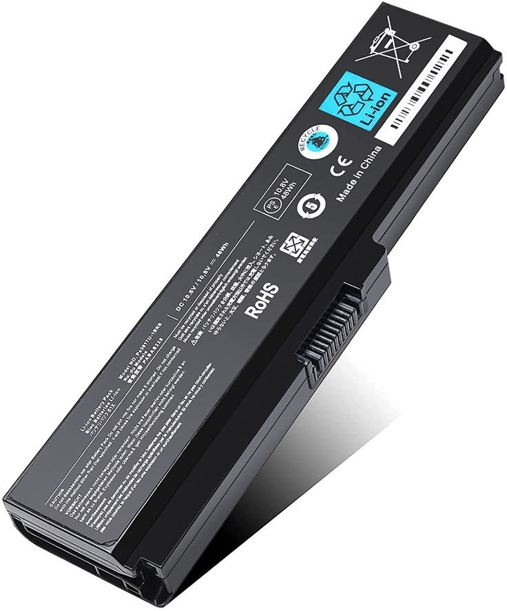

Cuidados para tu laptop
Su diseño compacto acumula calor y desgaste. Estas prácticas alargan su vida útil.

Puntos clave
Revisa estos elementos con frecuencia.

Batería
Mantén la carga entre 20 % y 80 % y evita el calor extremo.

Ventilación
Úsala sobre superficies duras; una base con ventilador ayuda.
Teclado
Voltea y aplica aire comprimido; limpia con alcohol isopropílico.
Pantalla
Paño de microfibra ligeramente húmedo; nunca rocíes directo.
Limpieza paso a paso
- Apaga y desconectaRetira el cargador y la batería si es extraíble.
- Sopla las rejillasAire comprimido en ráfagas cortas, sin inclinar la lata.
- Limpia superficiesMicrofibra con alcohol isopropílico al 70 %.
- Revisa temperaturasCon software de monitoreo; lo normal es menos de 85 °C en carga.
Temperatura y consumo
Entender lo que ocurre dentro del equipo.
Una laptop concentra procesador, tarjeta gráfica y batería en un espacio mínimo. Cuando la temperatura sube demasiado, el sistema reduce la velocidad del procesador para protegerse (thermal throttling), lo que se percibe como lentitud. Mantener las rejillas limpias y usar un plan de energía equilibrado ayuda a evitarlo.
Transporte y almacenamiento
Los golpes son una causa frecuente de daño.
- Usa una funda acolchada y no guardes objetos pesados sobre la laptop dentro de la mochila.
- Evita cerrar la tapa con objetos encima del teclado (cables, audífonos).
- Si la guardarás por semanas, déjala con 50 % de batería y en un lugar fresco y seco.
- Sujétala por la base, no por la pantalla, y evita abrir la tapa tomándola de una esquina.
Señales de alerta
- Batería que dura mucho menos o se hincha (deja de usarla y llévala a revisión).
- Ventilador siempre al máximo o apagados repentinos.
- Cargador o puerto de carga muy caliente o con holgura.
Herramientas necesarias
Herramientas recomendadas para el mantenimiento de una laptop.

Galería visual
Referencias gráficas del proceso.